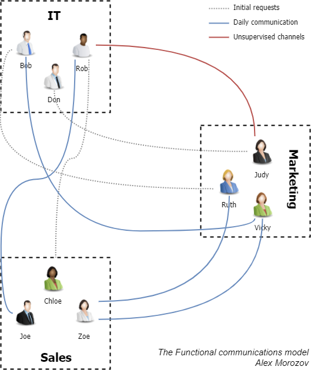
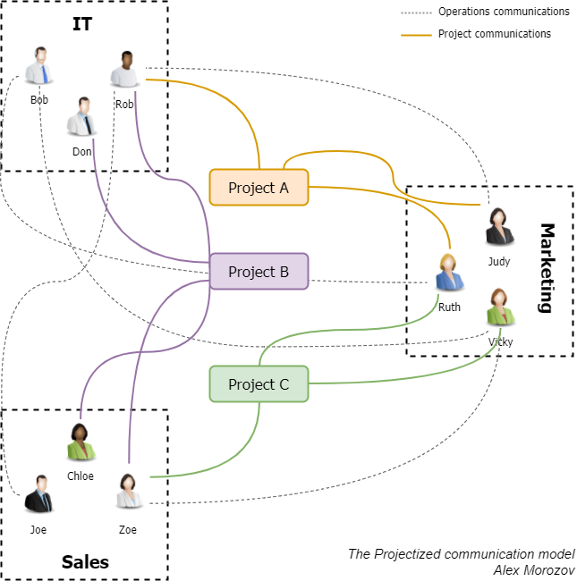
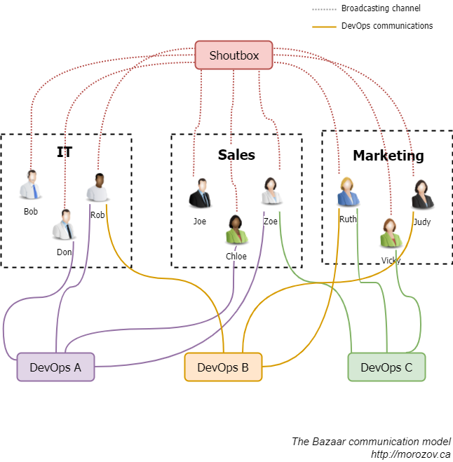
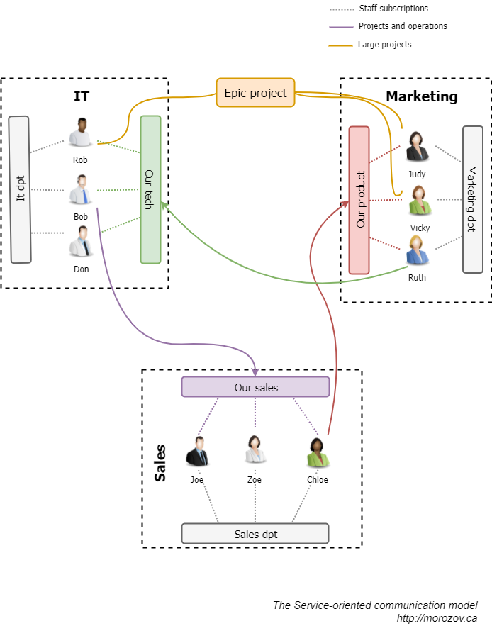

How corporate communications ruin your teamwork and a way to fix that
Posted on Sat 02 December 2017 in Teamwork
Our new executive had almost ruined our team spirit. Did we fire her? No, we fixed the root cause - our communication technology.
A couple of months ago, I faced a sensitive issue. A freshly hired C-suite executive - a talented and hard-working person - was consistently undermining our team spirit. You must have met this kind of personality in life. They never cross the fine line, but the very essence of their existence seems to be finding faults in others and keeping everyone around up to speed on those discoveries. What’s the worst, they do it in private conversations only, which leaves you with an awkward choice. Either you report the behavior and become a ‘whiner who discloses private talks’ or let them get away with it, unwittingly encouraging the misconduct.
In less than a month, her whole department picked up on that toxic behavior. It was hard to resist the uber-populist idea that they were the only hard-workers in the company, whilst the others got paid for doing nothing.
What did the CEO do to manage conflict between staff? Well, not much. He was afraid of losing any of employees, including the new executive. So he called a couple of meetings to warn everyone that a conflict between departments is intolerable. As you might have guessed, that didn’t have a lasting effect.
The problem was exacerbated by the structure of our company. The team is distributed across the country with just over 10% working at the offices. Because of that, it was quite hard to employ traditional teambuilding techniques.
Fallout
At first, it was difficult to estimate the cost of conflict directly. After all, it’s not a disaster, right? So thought the CEO. Until our two best salesmen departed just before the high season, citing tensions in the workplace as a primary reason.
Then appeared the wider, even more dismal consequences of conflict. Productivity in all departments plummeted. Not only because of constant quarrels but because they hadn’t been addressed directly and openly by the management. Many regarded that as a carte blanche to do whatever they wanted at work.
The Root Cause
Being a part of the executive team, I couldn’t just stand by and watch the teamwork downfall. After having a couple of talks with the new executive, I realized that she’s quite happy with her behavior and doesn’t want to change a thing. In a private conversation with the CEO, he directly asked me whether I was in favor of letting the person go. But despite a burning desire to cut the tangle with one stroke, I asked for a timeout. Why? Because I hit upon an idea.
As I dug deeper, it became apparent that the new executive’s personality was not the root of evil. Of course, her manners were horrible, but there was something else that allowed those manners to inflict the company such damage.
It was our communication technology. The tools we used didn’t protect us from non-compliant behavior. More than that, to some extent they encouraged it. You might be wondering, what kind of technology we used? Well, our setup was pretty standard. We used what I call the Functional model.
The Functional Model
It emerges naturally from the functional structure of a company. We were no exception.

If you have a request for another department, you first reach out to the head of that division. Next, you’re connected to a specific employee in a unit and communicate with her directly. In case of any questions, you reach out to the head again.
Example
On the diagram, we see initial communication requests: gray dotted lines. Bob from IT has an issue to figure out with Marketing, Judy’s laptop stopped working, and Rob would like to update the CRM so that Sales would be affected. Everyone first calls up the corresponding head of the department, and then they continue to communicate with department staff (blue lines). As it often happens, Rob and Judy know each other pretty well, so when Rob has a question for Marketing, he just pings Judy directly, bypassing usual subordination. This channel is a red line on the diagram.
Communications under this model are usually held via private messages, emails and telephone calls.
Pros
- It’s easy to set up. In fact, there’s nothing to set up.
- There’s no need to train staff.
Cons
- It’s a mess. Fellow PMPs will quickly notice that for 20 people we’ll end up having up to 380 communication channels, which is unmanageable.
- It’s least resilient to employees with a negative attitude. They can spread toxic behavior via private messages which are hard to inspect. In fact, this deficiency of the model made possible all the destructive behavior of our new executive.
- It’s biased and suppresses teamwork. Heads of divisions set the tone of all discussions, and often make decisions based on politics, not value.
- It’s non-transparent. Nobody knows the full story, even the seniors.
Once I understood the real culprit of our issues, I started exploring other communication models. The first one that came to mind was a project-centric structure.
The Projectized model
When a company understands that the Functional model hinders its performance, it usually switches to the Projectized model. For each ongoing project, a virtual group is created, and all communication is held in there.

Most of the time, group emails are used for that purpose. Every time you have a new project, you just create a new list of recipients, and you’re all set.
Example
On the diagram, we see the three departments working on three different projects. As they have group-based communication (colored lines), information is easily accessible for each project team member. Notice, though, that conversations regarding daily operations (gray dashed lines) are still peer-to-peer, using the Functional model.
Pros:
- A huge reduction of communication channels compared to the Functional model.
- Focused groups with a good degree of transparency.
- Easy to set up.
Cons:
- The majority of companies have matrix structure: several cross-department projects and operations within functional departments. The Projectized communication model addresses only needs of the former, leaving non-project communication under the Functional model.
- It’s still too rigid to fit with contemporary agile workflow
- This model disconnects projects (read - growth) and operations (sustaining and stability), effectively siloing them based on the communication model.
The drawbacks of the Projectized model were too significant for us, so I turned to the agile community for inspiration.
The Bazaar model
The aforementioned department isolation of the Projectized model is a big obstacle to a popular DevOps framework widely employed by startup companies. To overcome it, organizations sometimes make a 180-degree turn and make all the communications public and centralized.

One of the most popular tools using this approach is Slack. You create a set of public channels to broadcast everything to subscribed members. As a rule, channels represent inter-department groups working on both projects and operations.
Example
The diagram shows us that instead of using peer-to-peer conversations, all involved parties now communicate in dedicated channels (colored lines). Those channels encompass project work and all the related ongoing operations. Also, there’s a company-wide public channel (red dotted lines) for discussing general things.
Pros:
- Improves transparency and encourages collaboration
- Helps quickly get new employees up to speed
Cons:
- This model is good for small companies with 10 or fewer employees. As the organization grows, the central communication spot quickly becomes a mess because of tons of groups/channels for every purpose.
- There is no separation of cross-department and intra-department work. As a result, it can become hard to find the right information in the haystack of noise.
- Responsibility gets diluted in this scenario, as we don’t have per-department communication groups anymore.
Probably, this agile model would fit some other company, but we clearly weren’t ready for such a dramatic switch. We needed something in between: a model that would foster collaboration, promote transparency, and encourage project work while not downplaying regular operations. To achieve all these results, I designed the Service-oriented model.
The Service-oriented model
It’s based on the Service-Oriented Architecture concept from IT field.This approach doesn’t just follow existing information flows, but instead re-models it, putting the flows in the right direction.

Every department has two communication channels: external and internal. An internal channel is used for intramural discussions that affect department’s staff only. And all the requests and suggestions from the other divisions go to the external channel.
Example
In this example, we have three external channels: ‘Our tech’, ‘Our product’, ‘Our sales’. If Ruth has anything related to the technology component, be that a faulty computer or a suggestion to improve website navigation, she sends it to ‘Our tech’. Similarly, when Bob wants to give a heads up about a CRM upgrade, he notifies everyone in Sales by posting his message in ‘Our sales’. Most of the projects are held in one of these public channels. If any of projects grows too large, like an ‘Epic Project’, then (and only then) it gets a separate channel.
Pros:
- The model provides maximum transparency for operations
- Everyone in a department sees ongoing operations and is up to speed with everything going on.
- Everyone outside the department sees the real amount of work being done by that department.
- It encourages initiative
- Managers can join the discussion anytime, but generally division members solve incoming issues themselves
- It promotes team responsibility
- Being represented as a ‘service’ to others helps team members go from individual to collective responsibility.
- No conflict. As everything, from projects to operations to smalltalk, is public, no one ever dares to speak ill of anyone else.
Cons:
- Of all the models, this has the greatest friction of deployment. Mainly, it’s about people’s reluctance going public with everything, not only project work.
- Employees need training to choose the right channel for their messages.
- There is clearly more information to consume. Open communication might lead to overwhelming communication.
Outcomes
So how did our story unfold? After a brief discussion, the CEO greenlighted a move to the new model. It took us about a week to set up a Zulip environment and design channels. And then only one roadblock was left on our way to success: inertia.
People naturally resist change, let alone a change in a way they communicate at work. Surprisingly, among the most outspoken opponents were the people who had been hit the hardest by interdepartmental conflict. Even after the switch, we had to track attempts of keeping online conversations private and nip them in the bud.
And our efforts have paid off. In just a week after the migration, we took a straw poll with employees. No single conflict was reported. Being forced to communicate in public space, everyone became polite and team-oriented.
Productivity has soared. Not only because there was no conflict, but because everyone’s efforts were now public. That worked better than any preaches on valuing work of others and doing the best oneself.
Also, the team felt much tighter. It’s hard to come up with a quantifiable measure of team spirit, but the average number of participants in company-wide discussions almost doubled.
Switching to the Service-oriented model in your company
Since then, I recommended several friends of mine switching to this model at work. They asked a lot of questions which made me understand the model might look complex at first. Here are some frequent questions with answers.
How does the model change bad attitude?
It might sound irrational first, but not only thoughts define behavior, but behavior also influences thoughts in a big way. When you keep saying that the world is a beautiful place, you’re more likely to notice evidence of that. That, in turn, reinforces or even modifies your system of beliefs. So once bad guys start behaving, they soon find themselves thinking well of others.
How can I make sure the transition goes smoothly?
In short, you can’t. There’s an opinion that you can plan out everything. That might work for simple projects, but not the one that deals with intangible things like the way people are used to communicate. So instead of visualizing the migration as a ‘A -> B’ path, instead prepare to a realistic ‘A -> Chaos -> B’ route. Don’t try to make it perfect the first time, but allow for several iterations.
What tool to use?
In most cases, you’ll want to use a tool like Slack. We use Zulip - an alternative to Slack having an extremely useful feature: every message has a topic, just like email. This allows us to clearly separate different discussions within a single channel.
Why not have a single channel for each division?
First, each department has a lot of daily technical talk that would be a noise if posted on the public channel. That doesn’t mean that the internal channel is somehow private and inaccessible for others, it’s just an information flow separator. Channel names usually copy departments’ names, like ‘IT’, ‘Accounting’, or ‘Sales’.
Second, every division has a product or service it creates for other divisions and customers. The task of an external channel is to focus on that service, creating healthy communication line between different departments. These channels should be named after the service, for example: ‘Our Tech’, ‘Doc flow’, or ‘Promotion’.
Who answers in an external channel?
Depending on particular department, you can either make everyone responsible for processing inbound requests or choose several people to answer. The former case, albeit a bit anarchic, is more valuable in terms of teams’ awareness of what’s going on.
Which channels do staff see?
Every employee receives notifications from at least two channels of his or her department - the internal one and outside-facing one. Besides that, he or she can send a message to any outside-facing channels of other departments.
How do projects fit into this model?
To ensure maximum agility and transparency, we decided not to create separate channels for each and every ongoing project. Instead of that, we employ the feature of our tool of choice I mentioned earlier - the ability to set topics to messages, to keep track of projects right in the external channels. This reflects the specific nature of our projects. They are usually short-lived (less than three months each), so we just create a separate topic for a project within a channel. If your company’s work cycle assumes long-running projects, you might want to dedicate separate channels to them.
What additional channels to create?
Cross-departmental operations channels. Depending on the company’s structure, there might be active ongoing operations across several departments. For instance, adding a new vendor might require Legal, Sales, and Marketing efforts. For that purpose, it makes sense to launch a ‘New vendors’ communication channel.
Small talk channels. Our team of ~50 members has around 20 channels. Among the most popular ones are ‘General’, ‘Ahaha’, and ‘Congrats’, with self-descriptive names.
Over to you
Have you experienced problems in communication caused by the technology you were using? Please share in the comments!